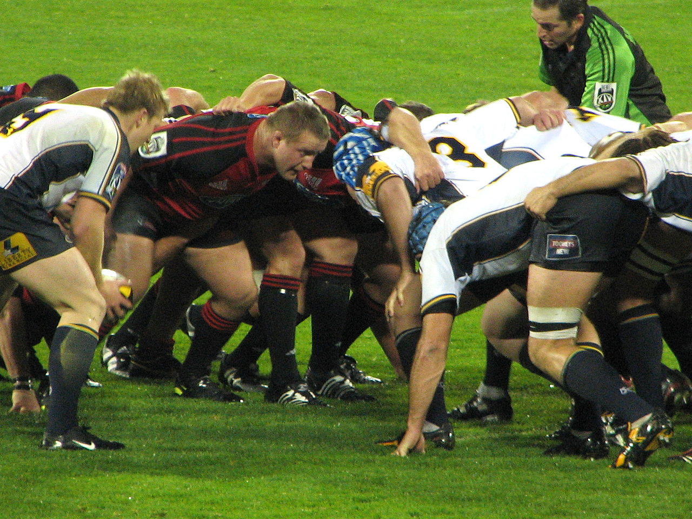

ПРАВИЛА
Правила регбі
Мета гри
Метою гри є приземлення м'яча у заліковому полі (місті) або ж забиття його ногою над перекладиною воріт у межах, позначених двома стійками.
Основи
Сутичка

У реґбі грають руками й ногами. При грі руками заборонено передавати м'яч вперед. Ногами м'яч бити вперед можна.
Гравець, який перебуває перед лінією м'яча вважається поза грою й не може брати в ній участі. Гравцю, який лежить на землі, теж заборонено брати участь у грі. Повалений на землю гравець зобов'язаний якомога швидше випустити м'яч із рук.
Просування гравця з м'ячем можна зупинити, схопивши його двома руками й поваливши на землю. Заборонено захоплювати гравця за шию чи однією рукою. Заборонені підніжки.
При виході м'яча з гри за бічну лінію його вкидають у коридор, який формується із гравців обох команд.
При грі вперед та інших дрібних порушеннях у основному виді регбі (регбі-15) призначається сутичка, в якій м'яч вкидається між двома групами із восьми гравців, і ті намагаються вибороти його, відштовхуючи групу супротивника.
При серйозніших порушеннях (наприклад, офсайді) призначаються карні удари.
Особливо груба гра карається вилученням на десять хвилин (жовта картка) чи з гри (червона картка).
У найпоширенішому варіанті (регбі-15) гра складається із двох таймів тривалістю 40 хвилин кожен. Проте, після того, як час тайму вибіг, боротьба не припиняється, доки м'яч не вийде з гри.
Залікові очки
В основному виді регбі (регбі-15, регбі-юніон) за приземлення м'яча в місті супротивника дається 5 очок й право на спробу реалізації. При успішній реалізації дається ще два очки.
За влучне пробиття карного удару дається 3 очки. Те ж саме стосується влучного удару з відскоку від землі (дроп-голу).
У регбі-13 за приземлення м'яча в заліковому полі команда отримує 4 очки і право на спробу реалізації. За успішну реалізацію команда отримує ще два очки.
Головна